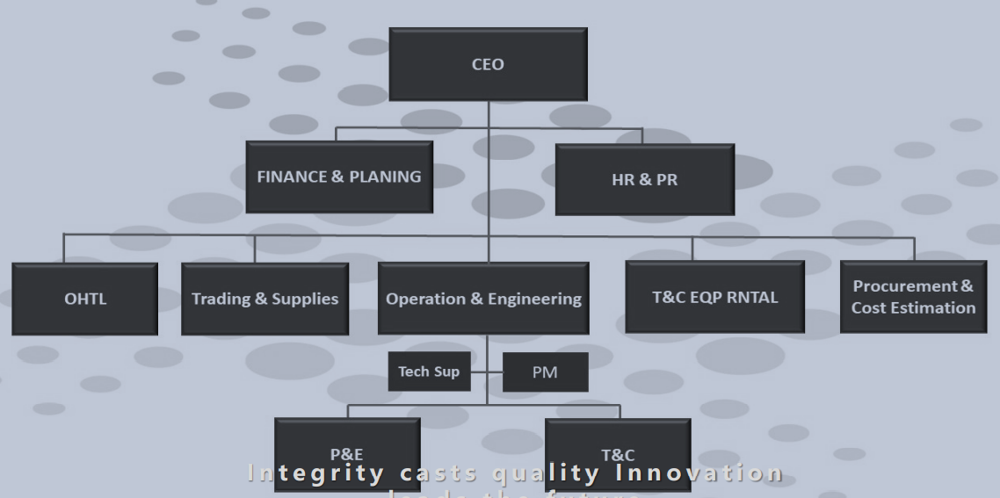

    <!-- ======= About Us Section ======= -->
    <section id="about" class="about">
        <div class="container" data-aos="fade-up">
  
          <div class="section-title">
            <h2>About us</h2>
          </div>
  
          <div class="row content">
            <div class="col-lg-6">
              <h4>who we are?</h4>
              <p class="text-align-justify" >
                
It is our great pleasure to introduce TechWorx, is one of the leading
vertically integrated contractors, which has attained a strong reputation
in this field with excellent commitment, sustained growth and stability,
professional management with high quality of work; on time and within
budget. Our range of expertise allow us to mobilize our team to
support complex technical matters, which provides assurance of task
completion in safe, reliable and efficient way.
We believe our pre-existing skills, expertise and commitments will allow
us to fit into your work environment and immediately start supporting
the needs of your project. We have enclosed our profile to support our
expression of interest, which shows that we would bring the positive
impact on project by presenting the skills in following:
              </p>
              <ul>
                <li><i class="ri-check-double-line"></i> Electrical, Testing & Commissioning</li>
                <li><i class="ri-check-double-line"></i> Civil Work</li>
                <li><i class="ri-check-double-line"></i>Automation and system control  </li>
              </ul>
            </div>
            <div class="col-lg-6 pt-4 pt-lg-0">
              <h4>vision
              </h4>
              <p class="text-align-justify">
                TECHWORX aims to be a competitive and
                reliable service provider. We seek and embrace
                new technologies and developments within the
                areas of our expertise and we look forward to
                the challenges ahead where we can maintain
                and expand our current relationships with our
                valuable clients, at the same time exploring
                fresh horizons with new and exciting prospects
              </p>
              <h4>MISSION
              </h4>
              <p class="text-align-justify">
                We are aware of the high demands of our clients and
their project needs. We therefore not only understand
ourselves as an engineering service provider, but
rather as partner supporting our clients with
comprehensive solution, taking into consideration
high standards of workmanship, quality products and
services, coupled with safety and cost efficiency.
              </p>
              <a href="#" class="btn-learn-more">read More</a>
            </div>
          <!-- ISO Certificates -->
          <div class="col-lg-6 " data-aos="fade-right" data-aos-delay="100">
            <h4>ISO Certificates
            </h4>
            
      
          </div>
            <!-- Organization Chart -->
            <div class="col-lg-6 pt-3" data-aos="fade-left" data-aos-delay="100">
              <h4>Organization Chart
              </h4>
              
      
            </div>
          </div>
  
        </div>
      </section><!-- End About Us Section -->